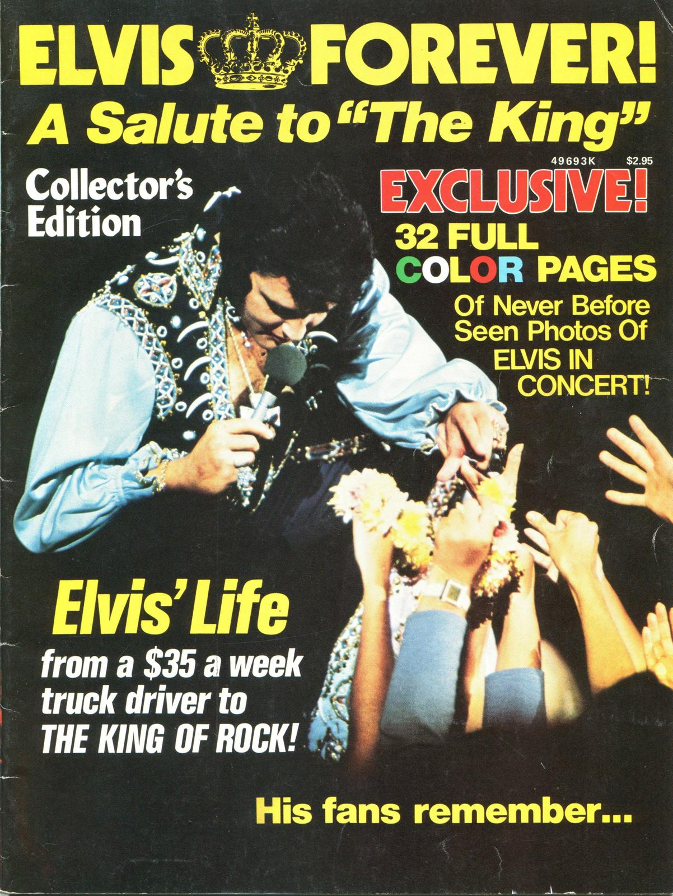

04-05: When Parts That Make Up Wholes Make Up Parts and Make Up Wholes
- A God in Every Stone by Atavist Books
- The Mastermind by The Atavist Magazine
- The Panama Papers by Sueddeutsche Zeitung
- Paul Ford: What is Code by Bloomberg
- Thon Maker by Victory Journal
- Luge by the New York Times
- Snapchat Stories
- @MayorEmanuel Twitter account by Dan Sinker
- Lines by The Cafe Society
- Quartz app
- Her Long Black Hair by Janet Cardiff
- Interactive Wall at the Cleveland Art Museum
- How I Reverse Engineered Google Docs by James Somers
Mockups & Flowcharts
Workshop: Visualizing Story Flows w/ Wireframes
Let’s rethink this:
